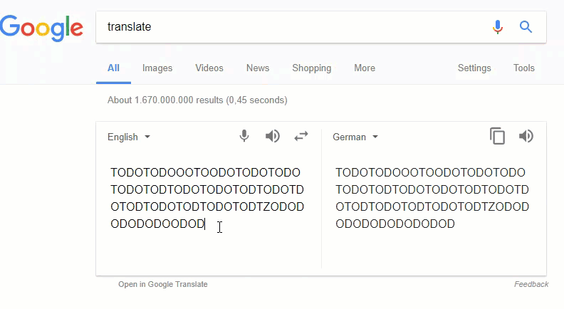
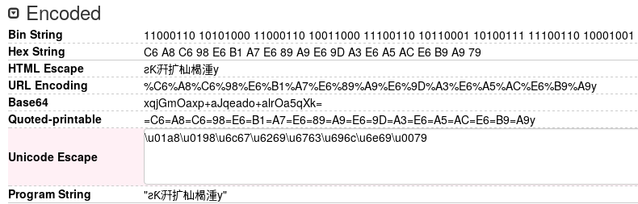
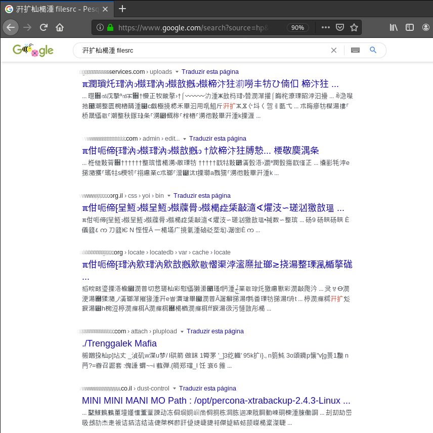
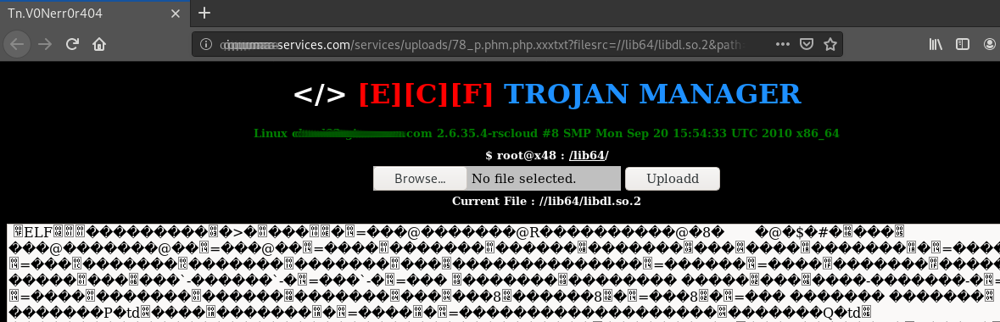
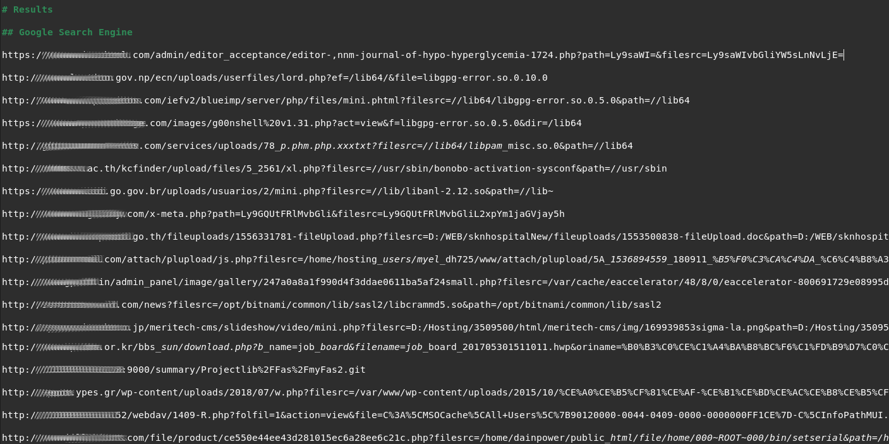

Backdoor Search Engine - Vulnerable & compromised systems indexed by Google Search
25-04-2020
Image credits: TechCrunch
Introduction
For a long time, Google search is being used by hackers to find specific elements on web applications by building customized queries containing advanced search operators. Using search results to identify security flaws is known as Google Dorks. This concept was introduced in 2002 by a computer security expert, Johnny Long, while Using Google as a Security Testing Tool[1].
Searching
Taking advantage of big internet data collection for intelligence purposes (OSINT) can fall in a less ethical category as described in [3] since most of the times this type of information is handled directly. The main purpose of this research is not focusing on common well-known dorks but to explore new ways of constructing search terms that lead to yet unexplored results.
Unusual keywords
A few wild bytes appeared while testing a program feature under WineHQ environment due to memory leak.
These bytes were printed as CJK characters because of encoding.
For curiosity's sake, some searches (and translations) were performed to check if spitted out text
had something meaningful.
A fair example is string
Turns out some strings would translate to

Generating patterns
When testing a program, part of given input string was leaked from memory but with a different encoding.
For example, the input
The next step was using a specific keyword as input to produce a reasonable string.
Providing the word

dencode.com
This particular string was created by the hexadecimal sequence
At this moment we have a method to build custom strings with specific words that could perhaps guide our search. In other words, providing a concrete string will possibly make our search less dumb even though it is composed mostly by "random" characters. Google is able to extract and process information contained in such strings as observed while using translation feature.
Results
By searching the previously generated string we can expect
Adding a typical keyword commonly used in webshells parameters

First result contains malicious PHP code that was likely uploaded by a cyber attacker and includes a simple interface displaying system information, a file upload function and enable editing files located at a writeable directory.

Image demonstrating the view after being redirected from Google search engine.
The current loaded file (
It is unknown how and why this particular URL was included into Google dataset. Probably due to Google's optimization when selecting relevant results to display. Search engines effectiveness tend to be more precise now than some years ago[5]. Nevertheless, this does not explain why such URL is indexed with a .so file loaded. From my personal experience in threat intelligence (which is not cutting edge), it’s hard to believe an attacker has interest in opening a .so file over this interface for two reasons: first, it does not contain valuable information (considering this scenario); second, editing and saving a non-text file in web shell interface would corrupt it, leading to malfunction of programs requiring this shared object to run.
Conclusion
Constructing creative search expressions can lead to interesting results. This may be useful while gathering information during a pentest reconnaissance and enumeration phase but on the other side it could also be convenient to detect threats.
It is now evident that Google search engine do recognize when a user searches for terms similar to strings we presented. We started by observing translations from CJK characters sequences to a URL. Then, using a first example we got multiple results of binary files. By crafting a custom string, we were able to find system libraries included in web pages via uploaded malicious scripts, thus proving Google has indexed numerous URLs likewise.
The final outcome of gathering Google results using various string manipulation techniques as described above is the following.

References
- [1] Long, J. (2005). Using Google as a Security Testing Tool [Slides]. https://www.blackhat.com/presentations/bh-europe-05/BH_EU_05-Long.pdf
- [2] Long, J. (2004). You found that on Google? [Slides]. https://www.blackhat.com/presentations/bh-asia-04/bh-jp-04-pdfs/bh-jp-04-long.pdf
- [3] Mider, D. (2019). The Internet Data Collection with the Google Hacking Tool – White, Grey or Black Open-Source Intelligence? - Przegląd Bezpieczeństwa Wewnętrznego - Volume 11, Issue 20 - CEJSH - Yadda. http://cejsh.icm.edu.pl/cejsh/element/bwmeta1.element.desklight-2fc6e5dc-a980-4da0-b53b-d7adcb536c20
- [4] Reddit (2017). https://www.reddit.com/r/ProgrammerHumor/comments/6po5n2/i_might_have_found_a_bug_in_google_translate/
- [5] Lewandowski, D. (2015). The Retrieval Effectiveness of Web Search Engines: Considering Results Descriptions. http://arxiv.org/abs/1511.05800
Appendix
Strings used (base64 encoded):
- 7ISB5KKD7ICB6KGQ77yP65iR6JOS55el7qaj75O/77+H5JCk4KCBw6nkt7Lvv78=
- 5rGn5omp5p2j5qWs5rmpIGZpbGVzcmM=
Archived pages in Wayback Machine (slightly different results):
- http://web.archive.org/web/20200425134936/https://www.google.com/search?source=hp&ei=5D-kXuvzN-OflwS8rrPgCg&q=%EC%84%81%E4%A2%83%EC%80%81%E8%A1%90%EF%BC%8F%EB%98%91%E8%93%92%E7%97%A5%EE%A6%A3%EF%93%BF%EF%BF%87%E4%90%A4%E0%A0%81%C3%A9%E4%B7%B2%EF%BF%BF&oq=%EC%84%81%E4%A2%83%EC%80%81%E8%A1%90%EF%BC%8F%EB%98%91%E8%93%92%E7%97%A5%EE%A6%A3%EF%93%BF%EF%BF%87%E4%90%A4%E0%A0%81%C3%A9%E4%B7%B2%EF%BF%BF&gs_lcp=CgZwc3ktYWIQA1BQWFBg7wFoAHAAeACAAQCIAQCSAQCYAQCgAQKgAQGqAQdnd3Mtd2l6&sclient=psy-ab&ved=0ahUKEwjr9cr_24PpAhXjz4UKHTzXDKwQ4dUDCAY&uact=5
- http://web.archive.org/web/20200425135059/https://www.google.com/search?source=hp&ei=N0CkXuLxGfKPlwSGnJvgDw&q=%E6%B1%A7%E6%89%A9%E6%9D%A3%E6%A5%AC%E6%B9%A9+filesrc&oq=%E6%B1%A7%E6%89%A9%E6%9D%A3%E6%A5%AC%E6%B9%A9+filesrc&gs_lcp=CgZwc3ktYWIQA1DSAVjSAWC9AmgAcAB4AIABAIgBAJIBAJgBAKABAqABAaoBB2d3cy13aXo&sclient=psy-ab&ved=0ahUKEwii6fam3IPpAhXyx4UKHQbOBvwQ4dUDCAY&uact=5